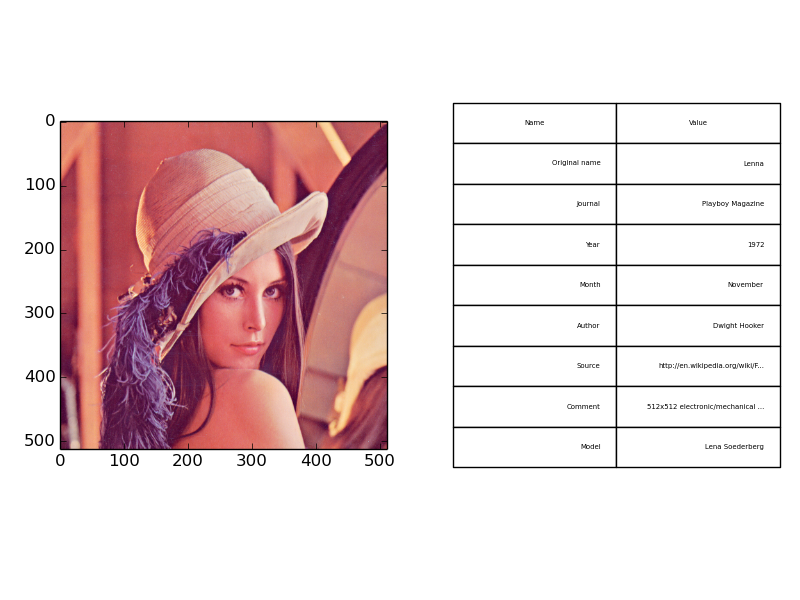

Tutorials¶
The following tutorials show how to work with NIX files, to store different kinds of data, tag points or regions of interest and add further information to the data.
List of Tutorials¶
- Working with files
- Basic data structures
- Tagging points and regions-of-interest
- Features
- Retrieve data
- Additional information
Working with Files¶
The following code shows how to create a new nix-file, close it and re-open them with different access rights (examples/fileCreate.py).
#!/usr/bin/env python
# -*- coding: utf-8 -*-
from __future__ import print_function
import nixio
file_name = 'file_create_example.h5'
# create a new file overwriting any existing content
file = nix.File.open(file_name, nix.FileMode.Overwrite)
print(file.format, file.version, file.created_at)
# close file
file.close()
# re-open file for read-only access
file = nix.File.open(file_name, nix.FileMode.ReadOnly)
# this command will fail putting out HDF5 Errors
file.create_block("test block", "test")
file.close()
# re-open for read-write access
file = nix.File.open(file_name, nix.FileMode.ReadWrite)
# the following command now works fine
file.create_block("test block", "test")
file.close()
Source code of this example: fileCreate.py.
Basic data structures¶
In this section we will show how different kinds of data are stored in nix files. We will start with simple regularly and irregularly sampled signals, turn to series of such signals and end with images stacks.
Regularly sampled data¶
Regularly sampled data is everything which is sampled in regular intervals in space, time, or something else. Let’s consider a signal that has been digitized using an AD-Converter at a fixed sampling rate. In this case the axis representing time has to be described using a SampledDimension. This dimension descriptor contains as mandatory element the sampling_interval. The sampling_interval has to be given because it also applies e.g. to spatial sampling, it is the more general term than the sampling rate which may appear appropriate for time discretization. Further, the unit in which this number has to be interpreted and a label for the axis can be specified. The following code illustrates how this is stored in nix files.
# create a 'Block' that represents a grouping object. Here, the recording session.
# it gets a name and a type
block = file.create_block("block name", "nix.session")
# create a 'DataArray' to take the sinewave, add some information about the signal
data = block.create_data_array("sinewave", "nix.regular_sampled", data=y)
data.unit = "mV"
data.label = "voltage"
# add a descriptor for the xaxis
dim = data.append_sampled_dimension(stepsize)
dim.unit = "s"
dim.label = "time"
dim.offset = 0.0 # optional

Source code for this example: regularlySampledData.py.
Irregularly sampled data¶
Irregularly sampled data is sampled at irregular intervals. The dimension which is sampled in this way has to be described using a RangeDimension. This dimension descriptor stores besides the unit and label of the axis the ticks, e.g. time-stamps of the instances at which the samples were taken.
data = block.create_data_array("sinewave", "nix.irregular_sampled", data=y)
data.unit = "mV"
data.label = "voltage"
# add a descriptor for the xaxis
dim = data.append_range_dimension(times)
dim.unit = "s"
dim.label = "time"

Source code for this example: irregularlySampledData.py.
Event data¶
TODO
Series of signals¶
It is possible to store multiple signals that have the same shape and logically belong together in the same DataArray object. In this case, the data is two-dimensional and two dimension-descriptors are needed. Depending on the layout of the data one dimension represents time and is described with a SampledDimension while the other represents the various signals. This is described with a SetDimension. A SetDimension can have labels for each entry along this dimension of the data.
y = np.vstack((sine, cosine))
data = block.create_data_array("waveforms", "nix.regular_sampled.multiple_series", data=y)
data.unit = "mV"
data.label = "voltage"
# descriptor for first dimension is a set
set_dim = data.append_set_dimension()
set_dim.labels = ['sin', 'cos']
# add a descriptor for the xaxis
dim = data.append_sampled_dimension(stepsize)
dim.unit = "s"
dim.label = "time"
Source code for this example: multipleTimeSeries.py.
Image data¶
Color images can be stored as 3-D data in a DataArray. The first two dimensions represent width and height of the image while the 3rd dimension represents the color channels. Accordingly, we need three dimension descriptors. The first two are SampledDimensions since the pixels of the image are regularly sampled in space. The third dimension is a SetDimension with labels for each of the channels. In this tutorial the “Lenna” image is used. Please see the author attribution in the code.
data = block.create_data_array("lenna", "nix.image.rgb", data=img_data)
# add descriptors for width, height and channels
height_dim = data.append_sampled_dimension(1)
height_dim.label = "height"
width_dim = data.append_sampled_dimension(1)
width_dim.label = "width"
color_dim = data.append_set_dimension()
color_dim.labels = channels

if the image is not shown install imagemagick or xv tools (Linux) Source code for this example: imageData.py.
Tagging regions¶
One key feature of the nix-model is its ability to annotate, or “tag”, points or regions-of-interest in the stored data. This feature can be used to state the occurrence of events during the recording, to state the intervals of a certain condition, e.g. a stimulus presentation, or to mark the regions of interests in image data. In the nix data-model two types of Tags are discriminated. (1) the Tag for single points or regions, and (2) the MultiTag to annotate multiple points or regions using the same entity.
Single point or region¶
Single points of regions-of-interest are annotated using a Tag object. The Tag contains the start position and, optional, the extent of the point or region. The link to the data is established by adding the DataArray that contains the data to the list of references. It is important to note that position and extent are arrays with the length matching the dimensionality of the referenced data. The same Tag can be applied to many references as long as position and extent can be applied to these.
position = [250, 250, 0]
extent = [30, 100, 3]
tag = block.create_tag('Region of interest', 'nix.roi', position)
tag.extent = extent
tag.references.append(data)

Source code for this example: singleROI.py.
Multiple points or regions¶
For tagging multiple regions of interest in the same data the MultiTag object is used. Unlike the simple Tag from the previous example, the multiple positions and extents can be given. These are stored in DataArray objects. The tagged dataset is linked via the references. There are some restrictions regarding the DataArrays storing positions and extents. The data stored in them must be 2-dimensional. Both dimensions are SetDimensions representing the individual positions and the positions in the referenced data, respectively. Thus, the second dimension has as many entries as the referenced data has dimensions.
In the following example we will declare multiple ROIs in a image. The image as a spatial extent and three color channels, is hence 3-D. The same mechanism can, of course, be used to tag other event in different kinds of data. For example in the neuroscience context: the detection of action potentials in a recorded membrane potential.
roi_starts[0, :] = [250, 245, 0]
roi_starts[1, :] = [250, 315, 0]
roi_starts[2, :] = [340, 260, 0]
roi_extents = np.zeros((3,3))
roi_extents[0, :] = [30, 45, 3]
roi_extents[1, :] = [30, 40, 3]
roi_extents[2, :] = [25, 65, 3]
# create the positions DataArray
positions = block.create_data_array("ROI positions", "nix.positions", data=roi_starts)
positions.append_set_dimension() # these can be empty
positions.append_set_dimension()

Source code for this example: multipleROIs.py.
Tagging spikes in membrane potential¶
Neuroscience example. The same construct as above is used to mark the times at which action potentials were detected in the recording of a neuron’s membrane potential.
data = block.create_data_array("membrane voltage", "nix.regular_sampled.time_series", data=voltage)
data.label = "membrane voltage"
# add descriptors for time axis
time_dim = data.append_sampled_dimension(time[1]-time[0])
time_dim.label = "time"
time_dim.unit = "s"
# create the positions DataArray
positions = block.create_data_array("times", "nix.positions", data=spike_times)
positions.append_set_dimension() # these can be empty
positions.append_set_dimension()
# create a MultiTag
multi_tag = block.create_multi_tag("spike times", "nix.events.spike_times", positions)
multi_tag.references.append(data)

Source code for this example: spikeTagging.py.
Retrieving tagged regions¶
Tagging regions of interest in one thing but retrieving the tagged data slice is another. The Tag and MultiTag entities offer a function for this. Consider the image example from above:
Three regions were tagged. To retrieve the respective data the following code has to be executed:
position_count = tag.positions.shape[0]
for p in range(position_count):
roi_data = tag.retrieve_data(p, 0)[:]

Source code for this example: multipleROIs.py.
Features¶
The following code shows how to use the Features of the NIX-model. Suppose that we have the recording of a signal in which a set of events is detected. Each event may have certain characteristics one wants to store. These are stored as Features of the events. There are three different link-types between the features and the events stored in the tag. nix.LinkType.Untagged indicates that the whole data stored in the Feature applies to the points defined in the tag. nix.LinkType.Tagged on the other side implies that the position and extent have to be applied also to the data stored in the Feature. Finally, the nix.LinkType.Indexed indicates that there is one point (or slice) in the Feature data that is related to each position in the Tag.
The following examples show how this works.
Untagged Feature¶
Let’s say we record the activity of a neuron and at a certain epoch of that recording a stimulus was presented. This time interval is annotated using a Tag. This inidicates the time in which the stimulus was on but we may also want to link the stimulus trace to it. The stimulus is also stored as a DataArray in the file and can be linked to the stimulus interval as an untagged Feature of it.
tag = block.create_tag("stimulus presentation", "nix.epoch.stimulus_presentation", [stim_onset])
tag.extent = [stim_duration]
tag.references.append(data)
# set stimulus as untagged feature of the tag
tag.create_feature(stim, nix.LinkType.Untagged)
# let's plot the data from the stored information

Source code for this example: untaggedFeature.py.
Tagged Feature¶
Tagged Features are used in cases in which the positions and extents of a tag also apply to another linked dataset. In the following example the spike times should also be applied to the stimulus that led to the responses. The stimulus is saved in an additional DataArray and is linked to the spike times as a Feature setting the LinkType to tagged.
stimulus_array = block.create_data_array("stimulus", "nix.regular_sampled", data=stimulus)
stimulus_array.label = "stimulus"
stimulus_array.unit = "nA"
# add a descriptor for the time axis
dim = stimulus_array.append_sampled_dimension(stepsize)
dim.unit = "s"
dim.label = "time"
# set stimulus as a tagged feature of the multi_tag
multi_tag.create_feature(stimulus_array, nix.LinkType.Tagged)
# let's plot the data from the stored information
plot_data(multi_tag)
file.close()

Source code for this example: taggedFeature.py.
Indexed Feature¶
In the example, the signal is the membrane potential of a (model) neuron which was stimulated with some stimulus. The events are again the action potentials (or spikes) fired by that neuron. A typical analysis performed on such data is the Spike triggered average which represent the average stimulus that led to a spike. For each spike, a snippet of the respective stimulus is cut out and later averaged. In this example we store these stimulus snippets and link them to the events by adding a Feature to the MultiTag. There are three different flags that define how this link has to be interpreted. In this case there is one snippet for each spike. The index of each position has to be used as an index in the first dimension of the Feature data. The LinkType has to be set to indexed.
snippets.unit = "nA"
set_dim = snippets.append_set_dimension()
# add a descriptor for the time axis
dim = snippets.append_sampled_dimension(stepsize)
dim.unit = "s"
dim.label = "time"
dim.offset = -sta_offset * stepsize
# set snippets as an indexed feature of the multi_tag
multi_tag.create_feature(snippets, nix.LinkType.Indexed)
# let's plot the data from the stored information
plot_data(multi_tag)

Source code for this example: spikeFeatures.py.
Retrieving feature data¶
The above sections have shown how to attach features to tagged regions. To get the feature data back there are two ways. (i) You can access the data via the selected feature as it is shown in the spikeFeatures.py. example (line 61).
snippets = tag.features[0].data[:]
With this line of code you get all the data stored in the Feature as one numpy array. If you want to get the feature data that is related to a singe point (or region) one can call (line 62):
single_snippet = tag.retrieve_feature_data(3, 0)[:]
with the first argument being the index of the position and the second one that of the feature. In case of Tag entities, there is only one argument that is the index of the feature you want the data from.
Storing the origin of data¶
Let’s assume we want to note the origin of the data. For example they have been obtained from a certain experiment or an experimental subject. For this purpose Source entities are used. Sources can be nested to reflect dependencies between different sources. For example One may record data from different neurons in the same brain region of the same animal.
# create some source entities
subject.block.create_source('mouese A', 'nix.experimental_subject')
brain_region = subject.create_source('hippocampus', 'nix.experimental_subject')
cell_1 = brain_region.create_source('CA1 1', 'nix.experimental_subject')
cell_2 = brain_region.create_source('CA1 2', 'nix.experimental_subject')
# add them to the data.
da1 = block.create_data_array("cell1 response", "nix.regular_sampled", data=response_1)
da1.sources.append(cell_1)
da2 = block.create_data_array("cell2 response", "nix.regular_sampled", data=response_2)
da2.sources.append(cell_2)
The Sources can be used to indicate links between data that cannot be reflected by the data itself.
Adding arbitrary metadata¶
Almost all entities allow to attach arbitray metadata. The basic concept of the metadata model is that Properties are oragnized in Sections which in turn can be nested to represent hierarchical structures. The Sections basically act like python dictionaries. How to create sections and properties is demonstrated by attaching information about the ‘Lenna’ image used above.
if len(cell_text) > 0:
nrows, ncols = len(cell_text)+1, len(columns)
ax.axis('off')
the_table = ax.table(cellText=cell_text,
colLabels=columns,
loc='center')
for cell in the_table.get_children():
cell.set_height(.075)
cell.set_fontsize(16)
Source code for this example: imageWithMetadata.py.

{kind=link}
{kind=link}